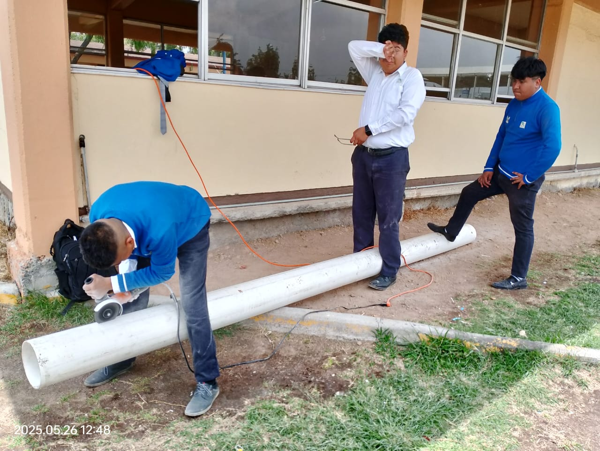
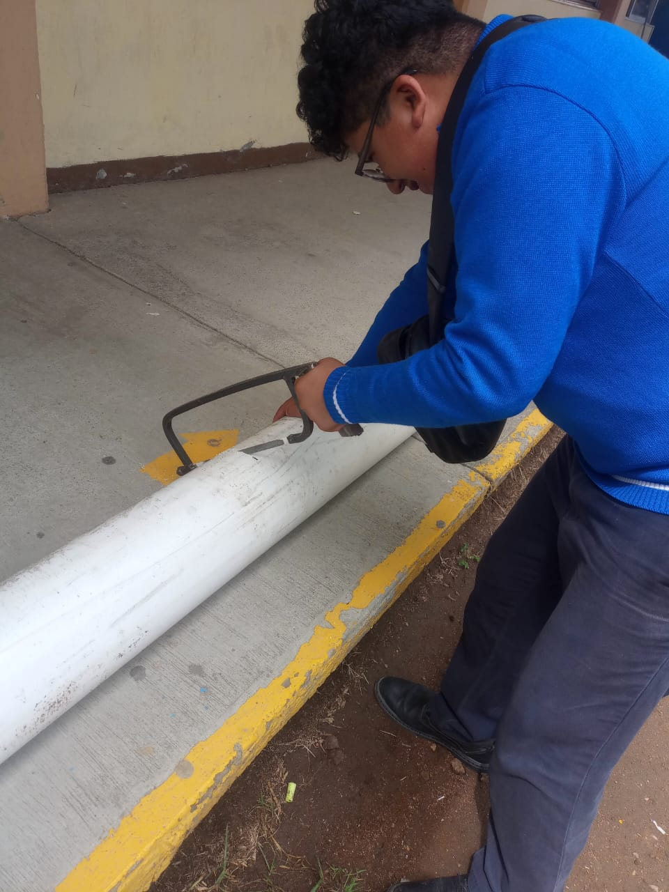
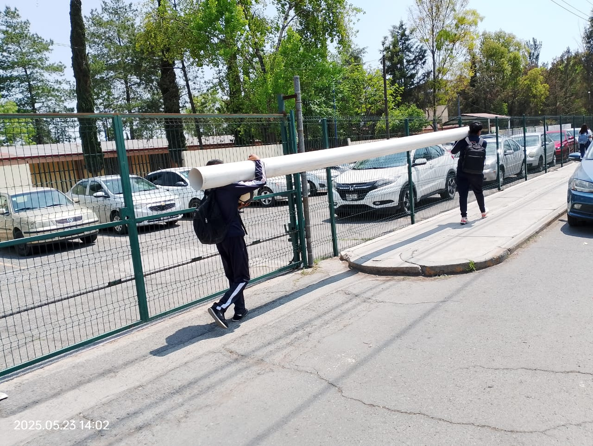

¿Qué es la captación de agua pluvial?
La captación de agua pluvial es un método sostenible para recolectar y almacenar el agua de lluvia. Este recurso puede ser utilizado en actividades como el riego, limpieza o incluso el consumo humano si se trata adecuadamente.



Este proyecto busca generar conciencia sobre la importancia del agua y cómo podemos aprovecharla de forma responsable.